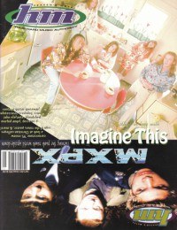

CMnexus
:
Contemporary Christian culture, music, and media.
Magazines
Profiles
Dove Awards
cmnexus.org
CM
nexus
→
Profiles
→
I
Imagine This
On the cover

September 1995
HM
Media coverage:
Mar 1994 in
Heaven's Metal
"Envision That - Imagine This", by
Dan MacIntosh
Mar 1994 in
CCM
"Faces to Watch: Imagine This", by
Rich Stevens
Jan 1995 in
Heaven's Metal
"Concert Review: Michael Sweet", by
Doug Van Pelt
Feb 1995 in
CCM
"In Concert: The Paradise Club, Boston, MA", by
Dan Milette
Sep 1995 in
HM
"Dreaming About Love...", by
Brian Vincent McGovern
Sep 1995 in
HM
"Poster: Imagine This"
Dec 1995 in
CCM
"Imagine Nation", by
Marykay Selby
Albums & reviews:
1993
:
Imagine This
Spr 1994 in
True Tunes News
Mar 1994 in
The Lighthouse
, by
Beth Blinn
Mar 1994 in
CCM
, by
Bruce A. Brown
Mar 1994 in
Heaven's Metal
, by
Doug Van Pelt
Jul 1994 in
Syndicate
, by
Chris Well
1995
:
Love
Sep 1995 in
HM
, by
Doug Van Pelt
Dec 1995 in
CCM
, by
Chad Bonham
Feb 1996 in
HM
, by
Doug Van Pelt
Books about Imagine This
"
Imagine This
" in
The Encyclopedia of Contemporary Christian Music
(
Mark Allan Powell
,
2002
)
CMnexus
(noun)
The magazine index
of modern music
and Christianity
© 2011 CMnexus. Last updated April 2021.
Contact:
Rants and other correspondence to:
editor -AT- cmnexus
-DØT- org
About